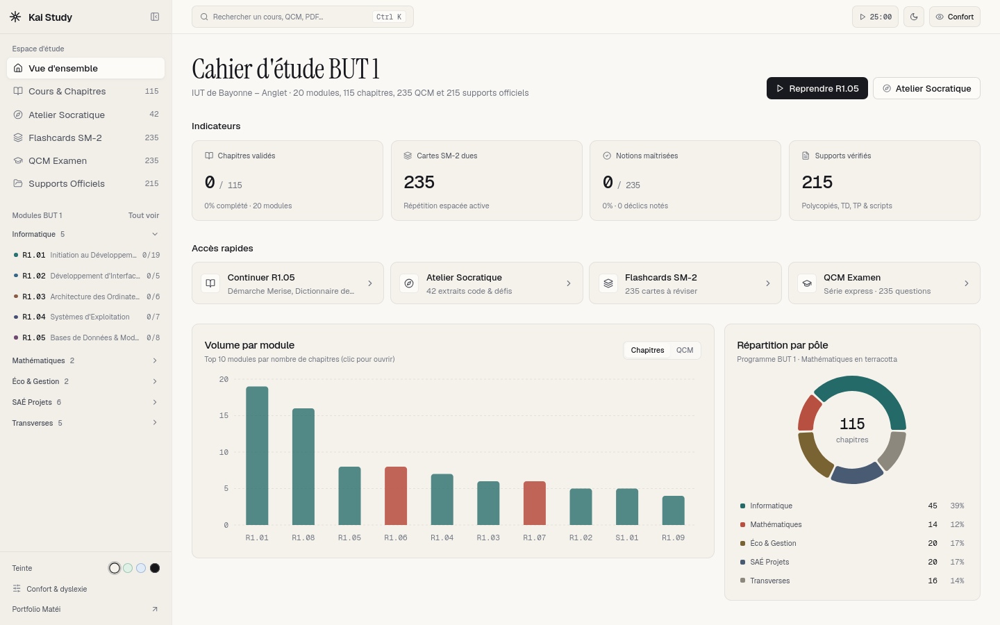
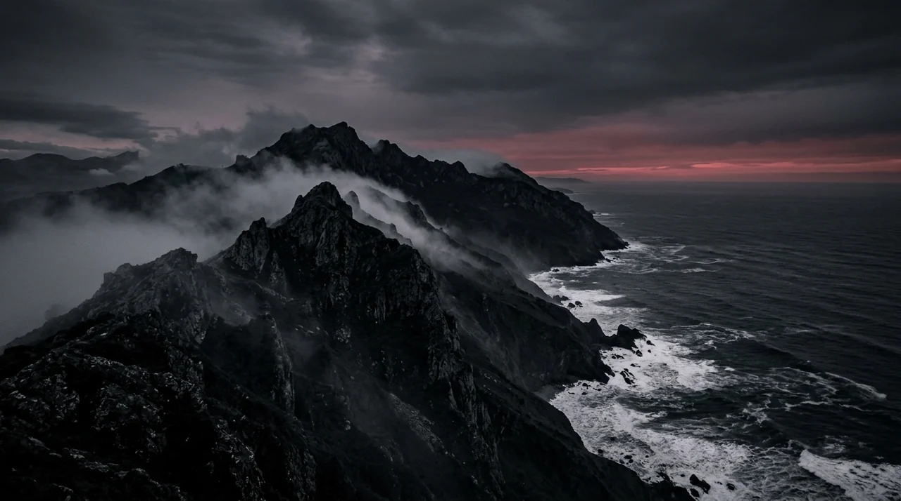
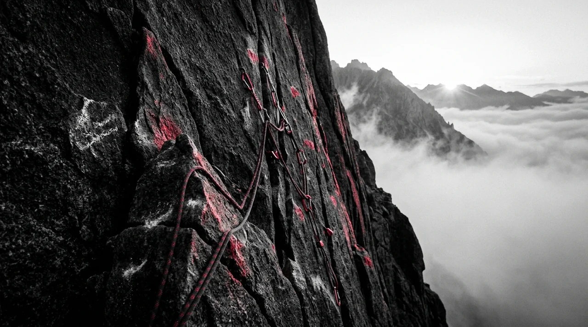
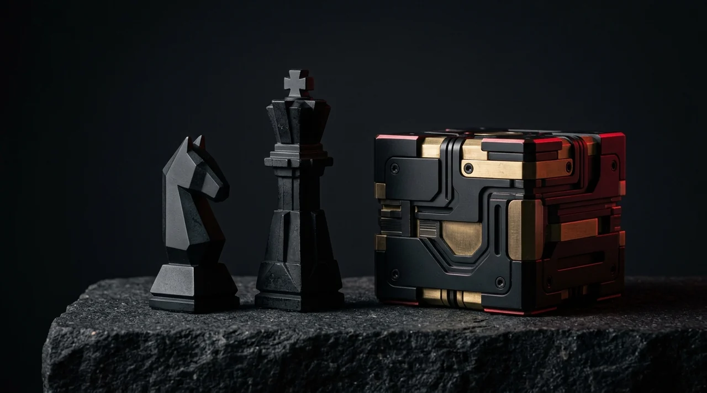

Alternance BUT 2 Informatique · Côte Basque & Remote
Du code qui tient
en production.
46 Pull Requests fusionnées en open-source, le tableur spatial ZenWorkspace v2.0 et l'écosystème Kai Study 24/7 — testables en direct ci-dessous.

IUT Bayonne–Anglet
PARCOURS A
01 · Produit Logiciel · EXCEL_AI_APP
ZenWorkspace v2.0.
ZenWorkspace v2.0.
Le tableur libéré de sa grille.
Application React 18 / TypeScript / Electron 33 adossée à un moteur FormulaEngine.ts de 923 lignes (AST, tri topologique DAG, LinkEngine inter-tables et export .xlsx).
zenworkspace.app — FormulaEngine AST · Electron 33

MOTEUR AST & DAG
923 lignes · Détection #CYCLE! & LinkEngine
O(V + E)
FIABILITÉ EN PRODUCTION
63 fichiers TS/TSX · Import/Export SheetJS
57 / 57 VITEST ✓
02 · Open-Source & AppSec
46 Pull Requests
46 Pull Requests
fusionnées en prod.
Lire des bases de code industrielles, reproduire la faille par un test et faire merger le correctif par les mainteneurs.
Terminal · CI Verification
● PASS
$ vitest run view.resolver.spec.ts
packages/twenty-server/src/metadata/view.resolver.ts
PATCH FUSIONNÉ
03 · Plateforme IUT & Cloud 24/7
Kai Study v4 &
Kai Study v4 &
agents autonomes.
Portail de révision scotopique partagé avec ma promotion BUT 1, alimenté en continu par un scraper Moodle CAS SSO et 12 services systemd sur Ubuntu 24.04.
04 · AppSec · Bas-Niveau · Temps Réel
Trois autres preuves
Trois autres preuves
en action.
OWASP & RFC 9116
Serveur MCP Python 3.12 publié sur Smithery & Glama. Audit temps réel CSP, HSTS et security.txt.
V-BOT · STOCKFISH NNUE
+2.4 · ~1500 ELO
$ gcc -std=c99 -Wall -Wextra -Werror lru_cache.c
✓ 0 warning · 0 error
$ valgrind --leak-check=full ./dijkstra
✓ in use at exit: 0 bytes in 0 blocks
✓ ERROR SUMMARY: 0 errors from 0 contexts
Cliquer pour lancer une particule · 60 fps
05 · Parcours & Terrain
De la Côte Basque aux
De la Côte Basque aux
revues internationales.
Formation, stages en entreprise, immersions au Royaume-Uni et discipline d'endurance.

BUT Informatique — IUT Bayonne–Anglet (UPPA)
ISO C99 / Valgrind, C++, graphes, Merise 3NF / PostgreSQL, réseaux et Linux.

Stage HUPI (Bidart) — Informatique, IA & Data
Immersion équipe développeurs & data scientists : Agile, Python, JS, HTML/CSS.

Bac Maths / NSI (Cantau) & Angleterre
1 mois à Bournemouth (2024) + 1 mois à Brighton (2025) pour l'anglais technique.

Bureau d'études Marra & Escalade
Conception sur plans techniques, précision géométrique et endurance sur la Côte Basque.

Échecs & Entraide promotion
Calcul tactique sous pendule (V-Bot UCI) et outils partagés pour ma promotion IUT.
Alternance BUT 2 · Parcours A
Construisons la suite
Construisons la suite
ensemble.
Véhiculé sur Biarritz, Anglet, Bayonne et Bidart — ouvert à l'hybride et au remote. Disponible pour un échange technique ou un test de code.